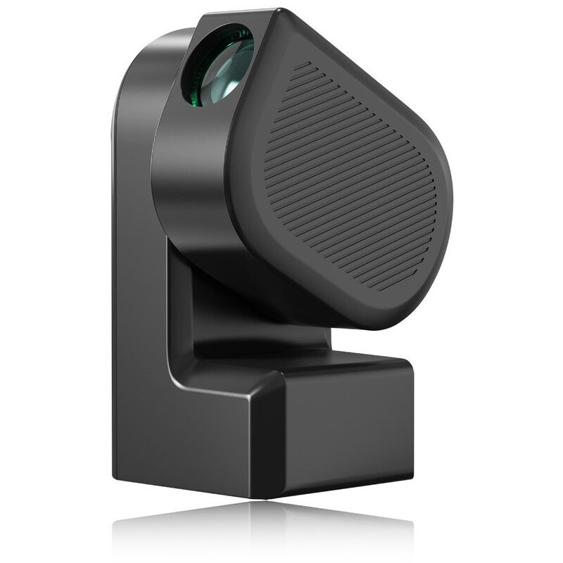
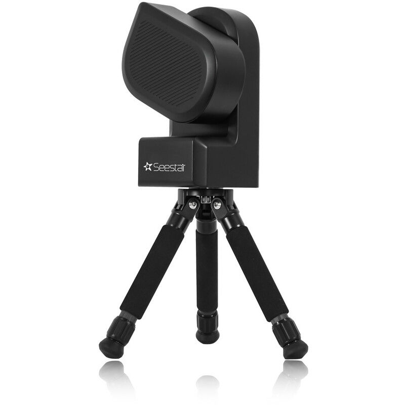

Nanotelescópios para ciência e divulgação
Uma rede trinacional de telescópios Seestar S50 integrando ciência, educação e ciência cidadã.
🇧🇷 Brasil · 🇨🇱 Chile · 🇦🇷 Argentina | Dados abertos · Ciência cidadã📡 Metas & Impacto
Observações poderosas ao alcance
Monitoramento de variabilidade estelar, movimentos próprios em aglomerados abertos, paralaxe de asteroides e ocultações estelares.
Educação e Divulgação
Formação de estudantes e professores, com materiais didáticos e oficinas práticas de astronomia.
Ciência cidadã
Qualquer pessoa com um Seestar S50 pode contribuir. As observações são enviadas para um hub central, reduzidas e disponibilizadas à comunidade.
🔭 O telescópio Seestar S50
Tecnologia acessível
Abertura de 50 mm, câmera CMOS com filtro IRCUT. Opera em modo Alt-Az ou equatorial (com cunha). Sensibilidade similar ao filtro BP do Gaia, permitindo fotometria precisa até magnitude 13.
O que medimos?
Curvas de luz (variabilidade estelar), posições precisas (astrometria) e movimentos próprios.
Hub de Dados
Plataforma online: https://andromeda.cbpf.br:5001 (em desenvolvimento). Envie seus frames, receba dados calibrados e acesse curvas de luz.
📊 Aglomerados abertos e movimentos próprios
Com o Seestar S50 podemos medir movimentos próprios de estrelas em aglomerados abertos, identificando membros e estudando a dinâmica da Via Láctea.
✅ O que já fizemos
30 telescópios Seestar S50
Adquiridos e em fase de testes, distribuídos entre instituições parceiras.
Hub de Dados
Infraestrutura de processamento e armazenamento em nuvem, com pipeline de redução automática.
Automação
Scripts para operação remota e agendamento de observações, integrados com o hub.
Objetivos Científicos e Educacionais
O Projeto Nanotelescópios utiliza atualmente 30 telescópios inteligentes (ZWO Seestar 50) para pesquisa, educação e divulgação em Astronomia.
Metade deles (15) está sendo configurada para atuar como uma rede de levantamento de variabilidade de objetos celestes observados nas regiões do disco e bojo da nossa Galáxia. A outra metade (15) será dedicada a observações realizadas por astrônomos amadores ou pelo público em geral (com orientação de astrônomos profissionais) para estabelecer um projeto-piloto de ciência cidadã com alvos pré-selecionados de interesse científico (atualmente: estrelas variáveis, asteroides e aglomerados abertos). Ambas as iniciativas serão coordenadas por astrônomos profissionais de diferentes universidades do Brasil, Argentina e Chile.
O objetivo principal desta iniciativa, incluindo tanto o levantamento do disco e bojo quanto o projeto de ciência cidadã, é coletar dados que sejam úteis para o avanço científico e a publicação de artigos, além de servir a propósitos educacionais e de divulgação.
A área a ser coberta no levantamento do disco e bojo pelo primeiro grupo de 15 telescópios abrangerá 600 graus quadrados do céu, selecionados a partir de campos já observados pelo telescópio robótico brasileiro T80-South e pelo Southern Photometric Local Universe Survey (S-PLUS; veja splus.cloud e splus.iag.usp.br). Os campos serão centrados nas coordenadas equatoriais RA=90° e DEC=−30° para o bojo, e RA=110° e DEC=−30° para o disco.
O Projeto Nanotelescópios visa aumentar a visibilidade pública da Astronomia e gerar interesse pelo uso de telescópios e pela exploração mais profunda de tópicos de Astrofísica de forma envolvente, potencialmente atraindo jovens para o estudo das ciências. Também visa unir as comunidades brasileira, chilena e argentina neste projeto-piloto, que é de interesse para astrônomos dos três países. Se bem-sucedido, a escala e o alcance do projeto serão ampliados no futuro.
O Projeto Nanotelescópios faz parte de uma iniciativa maior para instalar um telescópio de 2 m no Observatório Interamericano de Cerro Tololo, cujo principal objetivo será o acompanhamento de fontes descobertas pelo Observatório Vera Rubin. Também está vinculado ao projeto GMT Brasil, que envolve a participação da comunidade astronômica brasileira em um dos maiores telescópios em construção atualmente, o Giant Magellan Telescope.
Do ponto de vista da educação científica, os alunos podem aprender e desenvolver habilidades em processamento de imagens, análise de dados e os fundamentos da operação de telescópios. Pode-se dizer que os mesmos princípios usados na operação de grandes telescópios profissionais, como os telescópios Gemini ou VLT, também se aplicam à operação do S50. A experiência com formatos de dados digitais, como imagens .fits, expõe os usuários a condições semelhantes às encontradas em pipelines profissionais de processamento de dados, aproximando-os das práticas e métodos usados em cenários reais. Com o treinamento adequado, estudantes e professores podem se envolver em tópicos de pesquisa que oferecem oportunidades únicas.


Duas imagens de um telescópio Seestar S50 All-in-One Smart. Fonte: https://www.seestar.com/products/seestar-s50.
Em resumo, os telescópios SeeStar 50 oferecem uma excelente relação custo-benefício, e sua facilidade de uso os torna adequados para fins educacionais e de divulgação, bem como para tópicos científicos focados. Acreditamos que os telescópios Seestar fornecerão a estudantes e professores ferramentas que antes eram reservadas apenas para profissionais.
Dadas as qualidades do sensor CMOS utilizado no S50, como sensibilidade, baixo ruído e excelente linearidade, é possível acompanhar a variabilidade de objetos pulsantes, sistemas binários eclipsantes e objetos que apresentam variações imprevisíveis de brilho. A experiência mostra que, com uma abertura de apenas 50 mm e tempos de integração de vários minutos, é possível observar objetos que são alvo até mesmo de campanhas com o Telescópio Espacial Hubble.
O periastro de eta Carinae 2025.7
Eta Car é uma das estrelas mais luminosas do Universo local. É observada desde o século XVII e apresentou características surpreendentes desde então. Descobriu-se que é uma binária massiva interagente com longo período (P=2022d) e excentricidade extremamente alta (e=0,94). Ela passará pelo periastro no final de setembro de 2025 e os dados mais importantes a serem obtidos serão a fotometria em banda V (V~4,0). Esse grande brilho e o fato de a estrela cruzar o meridiano ao meio-dia em 1º de setembro tornam-na um alvo difícil, no entanto as observações são viáveis a partir do sul do Brasil, Argentina e Chile. A precisão melhor que 0,01 mag (facilmente alcançada com dezenas a centenas de imagens) é necessária porque o pico a ser monitorado tem amplitude de ~0,25 mag. Há uma estrela de comparação (HD303308 V=8,15) a 1 minuto de arco ao norte. O período crítico é de 15/ago a 15/set, o que exige amostragem diária. Nosso objetivo é obter dezenas de pontos de dados durante os crepúsculos astronômicos (vespertino e matutino). O pico fotométrico não é explicado por nenhum modelo existente do sistema. Mostrou-se que ele atinge uma amplitude maior a cada periastro e que o pico se desloca a uma taxa de 1 dia mais cedo por órbita. O cenário possível é que seja causado por uma mancha brilhante na "superfície" da estrela primária, iluminada/aquecida pela estrela secundária quando elas se aproximam. As estrelas possivelmente estão se aproximando uma da outra a uma taxa rápida (órbita instável?!), de modo que uma fusão estelar possa ocorrer em alguns séculos (outra Erupção Gigante como em 1847?). Um grande evento iminente no céu como este exige a atenção de toda a humanidade, mesmo que não ocorra em nossa vida. Este objeto receberá atenção da imprensa mundial por ocasião do periastro, provavelmente chamando a atenção do público para a campanha de monitoramento que estaremos realizando.
Observar ocultações causadas por certos asteroides sobre estrelas de fundo também é viável com esses instrumentos, dada sua capacidade de realizar medições seriadas ao longo do tempo. Algumas ocultações produzem efeitos que podem durar dezenas de segundos, e observar esses fenômenos de diferentes locais na Terra permite determinar as dimensões e a forma de objetos de uma forma que é impraticável até mesmo com imagens diretas de grandes instrumentos.
As observações de fenômenos transitórios, como ocultações estelares, são extremamente importantes para o estudo dos pequenos corpos do Sistema Solar. O Sistema Solar possui diversas regiões povoadas por asteroides e outros objetos, como o Cinturão Principal de Asteroides e o Cinturão de Kuiper. O estudo dessas populações fornece pistas fundamentais sobre a formação e a evolução do Sistema Solar.

Legenda da imagem.
Os asteroides, na maioria das vezes, aparecem em imagens como simples pontos de luz. Devido ao seu pequeno tamanho e à grande distância, não é possível observar diretamente suas formas a partir da Terra com telescópios comuns. As imagens detalhadas que mostram suas superfícies geralmente são obtidas por missões espaciais (sondas).

Legenda da imagem.
Determinar a forma desses objetos, especialmente os chamados objetos transnetunianos, é um grande desafio, pois eles ocupam uma região muito pequena no céu.
Uma das formas mais eficazes de estudar esses objetos é por meio das ocultações estelares. Esse fenômeno ocorre quando um asteroide passa em frente a uma estrela, bloqueando temporariamente sua luz. Essa “sombra” projetada pelo objeto pode ser observada na Terra. Ao registrar o instante em que a estrela desaparece e reaparece, conseguimos medir a duração da ocultação.
Uma das formas mais eficazes de estudar esses objetos é por meio das ocultações estelares. Esse fenômeno ocorre quando um asteroide passa em frente a uma estrela, bloqueando temporariamente sua luz. Essa “sombra” projetada pelo objeto pode ser observada na Terra. Ao registrar o instante em que a estrela desaparece e reaparece, conseguimos medir a duração da ocultação.

Legenda da imagem.
Quanto maior o número de observações distribuídas geograficamente, mais preciso será o cálculo do tamanho e da forma do asteroide. Esse método permite reconstruir o perfil do objeto com boa precisão.

Legenda da imagem.
Por exemplo, já foram realizados estudos em que o tamanho de um asteroide foi determinado com base em observações feitas em diferentes pontos do sul da América do Sul, combinando os dados de vários observadores.
Além do tamanho e da forma, também é possível estimar o albedo do objeto, que é a fração de luz refletida por sua superfície.

Legenda da imagem.
Combinando o albedo com outras medições, podemos inferir propriedades físicas importantes, como a composição superficial.
Em alguns casos, quando há informações adicionais (como massa estimada, por exemplo, a partir da presença de satélites naturais), é possível também calcular a densidade do objeto, o que fornece pistas sobre sua estrutura interna (se é rochoso, metálico ou mais poroso).

Legenda da imagem.
As ocultações estelares também podem levar a descobertas surpreendentes. Em certas situações, observa-se mais de uma queda de brilho durante o mesmo evento, indicando que dois objetos passaram em frente à estrela — o que pode levar à descoberta de novos asteroides.

Legenda da imagem.
Além disso, esse tipo de observação pode revelar a existência de estrelas duplas, quando a luz da estrela desaparece em etapas, indicando que há duas fontes próximas sendo ocultadas separadamente.
Outro resultado fascinante é a detecção de anéis ao redor de asteroides. Pequenas quedas de brilho antes e depois da ocultação principal podem indicar a presença de material orbitando o objeto, formando sistemas de anéis — algo que antes se pensava existir apenas ao redor de planetas gigantes.

Legenda da imagem.
Várias descobertas foram feitas no Brasil:

Legenda da imagem.
Embora desafiador, a observação de trânsitos de exoplanetas que causam uma diminuição no brilho da estrela hospedeira da ordem de alguns por cento também é factível, pois existem estrelas hospedeiras que podem ser visíveis a olho nu! Aqui, a natureza desafiadora dessas observações oferece uma oportunidade de explorar os limites das capacidades de telescópios como o S50.
Com agendamento cuidadoso e fotometria diferencial, observadores amadores e estudantes podem detectar sinais de trânsito, contribuindo para o refinamento de efemérides e até mesmo descobrindo novos trânsitos ao redor de estrelas brilhantes do sul.
Estrelas jovens devem estar próximas de seus locais de nascimento e ter velocidades ainda muito semelhantes às iniciais. Nesse contexto, os movimentos próprios estelares são fundamentais para distinguir membros do aglomerado de estrelas de campo. Por exemplo, ao traçar um diagrama vetorial de movimentos próprios, pode-se distinguir facilmente as estrelas que compartilham um movimento comum (membros do aglomerado) daquelas com movimentos aleatórios (estrelas de campo). Além disso, combinando os movimentos próprios dos membros do aglomerado com informações adicionais (por exemplo, paralaxe e velocidade radial), pode-se reconstruir o movimento 3D e a história de formação do aglomerado na Galáxia.
Fundamentos de Astronomia
Seestar S50 em ação
O telescópio usa abertura de 50 mm, sensor CMOS integrado e derrotador de campo embutido. Com uma cunha, opera em modo equatorial para fotometria de longa exposição. O pipeline automatizado reduz quadros escuros/planos e realiza astrometria WCS via Gaia DR3.
Astrometria e movimentos próprios
Medindo centroides ao longo de épocas, alcançamos precisão subpixel. Combinando com catálogos do Gaia, calculamos movimentos próprios com uma linha de base temporal estendida, identificando membros de aglomerados e sistemas binários.
Ciência de aglomerados abertos
Observamos aglomerados abertos do sul, empilhamos exposições e derivamos fotometria. A membresia é atribuída via diagramas vetoriais. O S50 resolve os pontos de virada da sequência principal para aglomerados com menos de 1 Gyr.
Curvas de luz e variabilidade
A fotometria diferencial com estrelas de comparação fornece precisão de milimagnitudes. Algoritmos automatizados de busca de período identificam estrelas variáveis e eventos transitórios como surtos cataclísmicos ou ocultações asteroides.
⚙️ Como funciona?
Seestar S50 em ação
O telescópio usa abertura de 50 mm, sensor CMOS integrado e derrotador de campo embutido. Com uma cunha, opera em modo equatorial para fotometria de longa exposição. O pipeline automatizado reduz quadros escuros/planos e realiza astrometria WCS via Gaia DR3.
Astrometria e movimentos próprios
Medindo centroides ao longo de épocas, alcançamos precisão subpixel. Combinando com catálogos do Gaia, calculamos movimentos próprios com uma linha de base temporal estendida, identificando membros de aglomerados e sistemas binários.
Ciência de aglomerados abertos
Observamos aglomerados abertos do sul, empilhamos exposições e derivamos fotometria. A membresia é atribuída via diagramas vetoriais. O S50 resolve os pontos de virada da sequência principal para aglomerados com menos de 1 Gyr.
Curvas de luz e variabilidade
A fotometria diferencial com estrelas de comparação fornece precisão de milimagnitudes. Algoritmos automatizados de busca de período identificam estrelas variáveis e eventos transitórios como surtos cataclísmicos ou ocultações asteroides.
👥 Equipe Nanotelescópios
Pesquisadores, professores e colaboradores do Brasil, Chile e Argentina.
📬 Participe & Contato
Recursos
- 🔗 Hub de Dados (envio/redução)
- 📘 Tutorial: como operar o Seestar S50 (*aqui*)
- 🐙 Scripts de automação no GitHub
- 📄 Publicações e relatórios (em breve)
Este projeto é financiado por agências de fomento dos três países e conta com o apoio de diversas universidades.